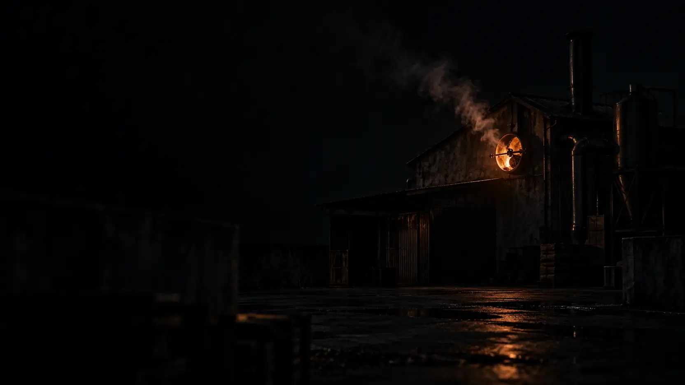

E2 盲评对比 · 半山烘焙官网首页
三个场景 × 每场景两个匿名槽位（甲 / 乙）· 宽屏 1440×900 滚动录像
盲评说明：每个场景内「甲 / 乙」的槽位分配已各自独立随机化；页面上不出现任何模型、运行或来源标识。
每个槽位为一段约 26 秒的匀速整页滚动录像（开头静置 3 秒、滚动 20 秒、结尾静置 2 秒）。
某槽位对应运行未完成时，以中性空缺卡片呈现，同样不披露任何来源信息。
场景 A · 雾中山
甲未开始
乙—
本槽位缺少结果
对应运行未产出可交付页面，此槽位保持空缺，不参与播放。
场景 B · 余烬
甲—
本槽位缺少结果
对应运行未产出可交付页面，此槽位保持空缺，不参与播放。
乙未开始
场景 C · 胶片夕照
甲未开始
乙—
本槽位缺少结果
对应运行未产出可交付页面，此槽位保持空缺，不参与播放。
附录 · 场景生成图全量图库（15 张源图，未经修改）
每场景 2 张 Hero 候选（标注选用状态）+ 3 张叙事图；选图元数据来自实验预置的 selection.json，与任何运行无关。
场景 A · 雾中山


场景 B · 余烬




场景 C · 胶片夕照